逻辑越权
1.水平、垂直越权
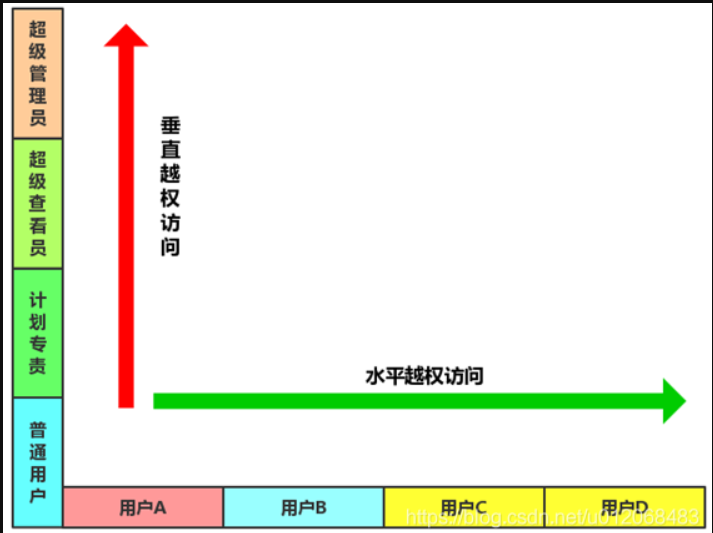
1.相关基础知识
产生越权的原理
1.前端UI界面根据用户等级不同，进行了部分可选功能显示
2.后端数据库中，根据用户等级的不同，设置了相应的组别，只要是该组别的用户就可以进行相应的操作
在访问网站时，数据包中有相应的传输用户的编号、用户组编号或者类型编号
1.水平越权
通过更换ID之类的身份标识，从而使A账号获取（修改、删除）B账号的数据，但A、B拥有相同的权限等级，也即属于同一组之类。这是由于服务器端在接收到请求数据进行操作时没有判断数据的所属人/所属部门而导致的越权数据访问漏洞。
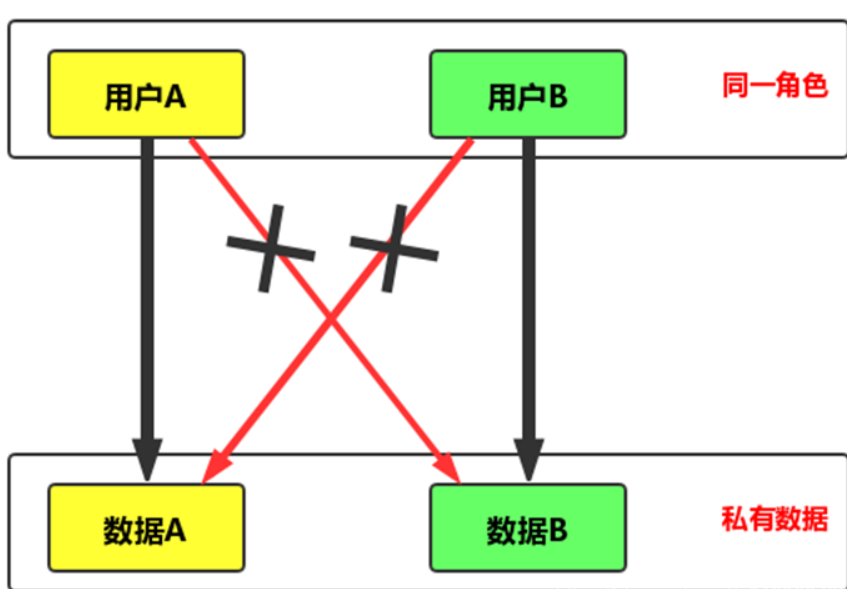
2.垂直越权
通过低权限账户发送高权限账户才能有的请求，获取高权限的操作
由于后台应用没有做权限控制，或仅仅在菜单、按钮上做了权限控制，导致恶意用户只要猜测其他管理页面的URL或者敏感的参数信息，就可以访问或控制其他角色拥有的数据或页面，达到权限提升的目的。
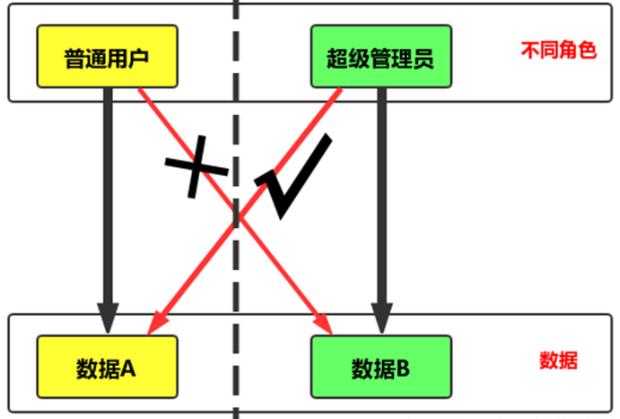
普通用户获取管理员的权限，一般需要知道管理员操作界面的数据包，而获取数据包的方法有
1 | 1.根据后台，自己本地搭建一样的平台进行抓包分析构造 |
3.未授权访问
删除请求中的认证信息后重放改请求，依旧可以访问完成该操作
2.工具检测
1.中通安全开源项目之越权漏洞自动化检测
https://github.com/ztosec/secscan-authcheck
https://mp.weixin.qq.com/s/vwF7aTvk-U-SnJqO3f80gA
2.高版本burp插件Authz，在burp自带的商店里面进行安装即可
3.小米范
3.修复
1.前后端同时对用户输入信息进行校验，双重验证机制
2.调用功能前验证用户是否有权限调用相关功能
3.执行关键操作前必须验证用户身份，验证用户是否具备操作数据的权限
4.直接对象引用的加密资源工防止攻击者枚举ID，敏感数据特殊化处理
5.永远不要相信来自用户的输入，对于可控参数进行严格的检查与过滤
2.支付数据篡改安全
1.登陆点
1.登陆点暴力破解
未加密就直接爆破，加密涉及到下面的协议
2.HHTP/HTTPS传输
HTTP采用明文传输，HTTPS采用加密传输，若进行HTTPS网站进行爆破，需要先猜解加密形式才能进行爆破
字典：https://github.com/huyuanzhi2/password_brute_dictionary
一般进行加密破解有两种方法
1.burp
在设置了爆破字典之后，要选择payload processing中的hash，选择对应的加密方式
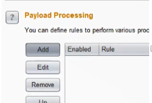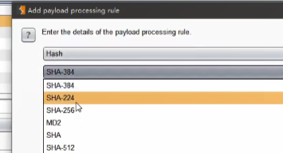
3.cookie脆弱点验证
即cookie验证时只验证了
1.黑盒
也就是在没有源码的情况下，查看数据包的cookie出有没有可操作性，比如将以下cookie做更改可以登录到test账户
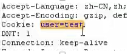
2.白盒
也即是代码审计，熊海cms 1.0 存在这种情况
4.session固定点测试
5.验证密文对比安全测试
2.业务点
业务点也即涉及到篡改数据
原理、检测、危害、修复等： https://www.secpulse.com/archives/67080.html
商品购买流程
选择商品和数量-选择支付以及配送方式-生成顶单编号-订单支付选择-完成支付
常见篡改参数
商品编号ID、购买价格、购买数量、支付方式、订单号、支付状态‘
常见修改方法
替换支付、重复支付、最小额支付、负数支付、溢出支付、优惠卷支付等等
3.找回机制及接口安全
1.找回机制
1.客户端回显
验证码在浏览器数据中可以看到
2.response状态值
在进行请求之后服务器会有返回值，我们就可对此回显值进行修改为正确的值，此时如果服务器是以浏览器回显值作为验证，那么此时修改回显值就可以有效绕过验证，如果是以服务器为准，那么修改无效
修改状态值
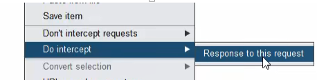
3.验证码爆破
目标在验证码验证时没有进行次数限制、验证码时效较长、客户端没有验证码(如每次点击都有新的验证码、点击图片、点击文字等，有可进行识别绕过，有收费版和免费的，效果参差不一)
注意可能爆破返回值长度一样，此时可能会成功，就需要自己一个一个取查看返回值是不是一样进行验证
4.找回流程绕过
例如-墨者-登陆密码重置漏洞分析溯源
在充值密码时，只接受了要重置的账户，并发送了验证码，但是并没有二次进行验证所要重置的账户是不是之前发送验证码的账户
5.session覆盖
6.弱token缺陷
2.接口调用
1.调用遍历
2.参数篡改
3.未授权访问
4.callback自定义
危害
1.短信轰炸
例如请求下面的数据包，就会造成发送验证码，此时可以写一个循环请求，就会一直发送验证码
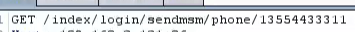
2.来电轰炸
4.验证码、token、接口
1.token
用于检验数据包唯一性
1.爆破
1.根据token的格式猜测加密形式以及未来出现的值，不大可能猜得到~
2.burp进行爆破，也即下面的回显爆破
2.回显
请求之后，在返回数据包可查看到token
爆破时，选择token爆破type为
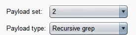
线程设置为1，设置重定向
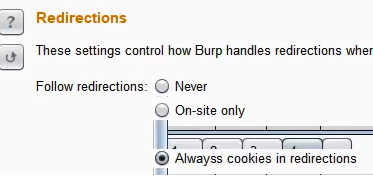
再选择Grep-Extract,添加token值
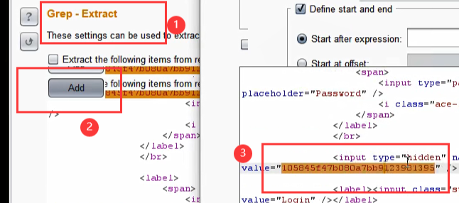
点击ok即可
3.固定
2.验证码
分类：图片、手机或邮箱、语音、视频、操作等
原理：验证生成或验证过程中的逻辑问题
危害：账户权限泄露、短信轰炸、遍历、任意用户操作等
1.爆破
2.识别
1.工具：Pkav_Http_Fuzz
缺点：不支持第三方拓展，只能在其上操作数据包
2.插件
https://www.cnblogs.com/nul1/p/12071115.html
https://github.com/c0ny1/captcha-killer/releases
https://github.com/bit4woo/reCAPTCHA/releases
免费的效果不太好，付费的还行。。
3.复用
1.服务端校验不完全
验证码在服务端进行比对之后没有删除，造成了可被多次利用
例如pikachu靶场提示了
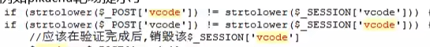
2.客户端校验
查看网页源代码，查看是否有检测验证码的相关js函数，有时候时把检测js代码封装为一个js文件，所以这时看不到js代码，就要抓包查看加载的一些js文件是否有相关的验证代码
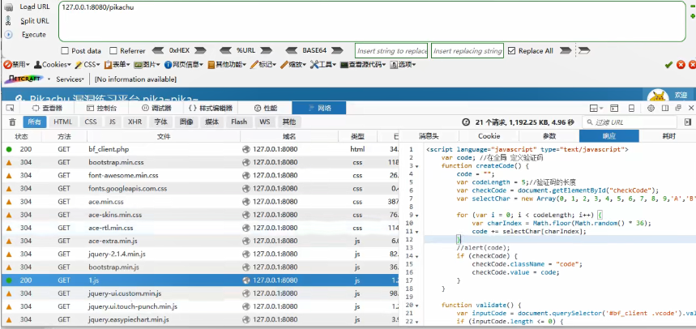
4.回显
3.接口安全问题
调用、遍历、未授权、篡改等
调用案例：短信轰炸
遍历案例：例如水平越权遍历用户的UID来达到其他用户
callback回调
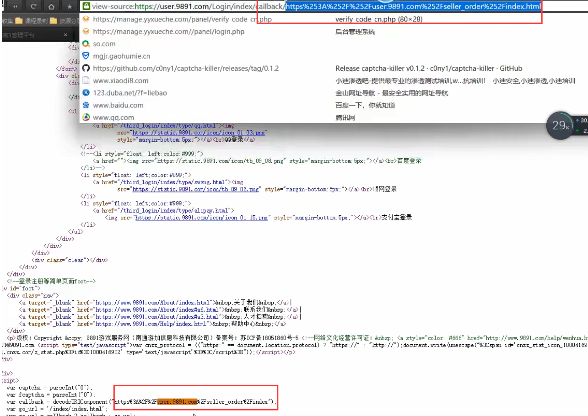
可以将以上回调地址修改为跨站漏洞~
一般像callback这种含有关键字的漏洞漏洞发现可以使用burp爬虫来代替手工进行发现，当数量达到一定程度之后，在history中可以搜索关键字来进行二次复查，符合条件的可以导出，一些工具可以进行数据包二次扫描
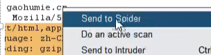
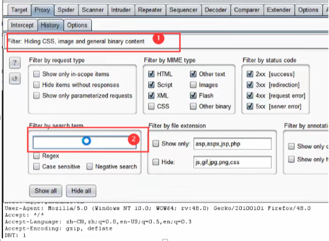
数据篡改
墨者靶场